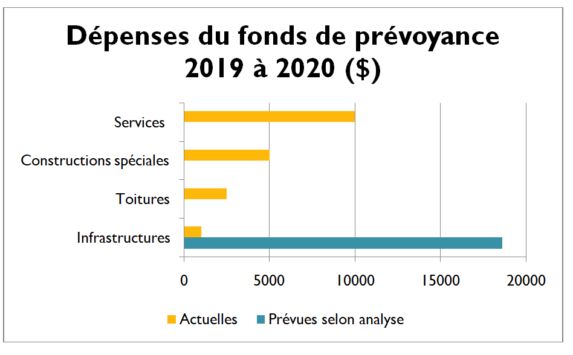

À venir:
Module optionnel de gestion du fonds de prévoyance
Vous pourrez dorénavant faire le suivi de vos dépenses réelles par rapport à la plus récente analyse de fonds de prévoyance.
Ce sera un outil précieux afin de vous permettre de prendre de bonnes décisions touchant le remplacement des composantes de votre immeuble.

